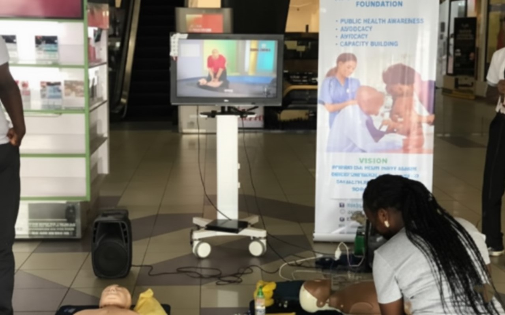
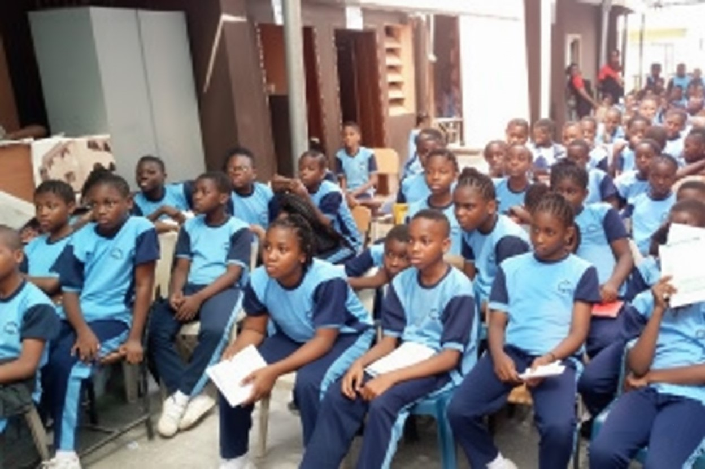

Education CAPRES - CPR in Schools Our Cardio Pulmonary Resuscitation in Schools project equips students with life-saving CPR skills, creating a new generation of first responders. 100+ Students Trained 3 Schools Reached Learn More
 Training OSATEA - Oxygen Therapy Training Online training program for nurses focusing on airway management and oxygen therapy, delivered through digital platforms. 40+ Nurses Trained 3 Hospitals Impacted Learn More
 Support Equipment Donation Program Providing essential medical equipment to under-resourced health centers to improve their capacity for quality patient care. 3 Health Centers 50+ Equipment Pieces Learn More